Creating a Chart
Overview
In this section, we will explore another basic use of Excel: Creating a chart, and this is a follow up tutorial to the previous tutorial: Creating a budget. Using a chart over the data provides many benefits, such as:
-
Clearer understanding of trends and patterns.
-
Quick and effective communication of key insights.
-
Time-saving analysis and interpretation.
Warning
Previous tutorial: Creating a budget must be completed before this tutorial.
Also, we will work with a separate worksheet to separate data and organize the project.
Benefits of working on separate worksheets:
-
Helps to keep data organized and reduces the risk of accidental overwrites
-
Allows for focused analysis and cleaner presentation, as you can segregate raw data, calculations, and visualizations effectively.
-
Allows comparisons between the data of the different sheets that may have same labels.
Creating a new worksheet
We will continue from where we left off from previous task, Creating a budget. We will have meaningful comparisons between the previous worksheet and the new worksheet(to be current).
-
Click on the plus sign on the bottom left of the page to add a new sheet:

-
Right click on the ”Sheet1” that is on the left of the bottom bar, click “Rename” and rename it to “Expected”: 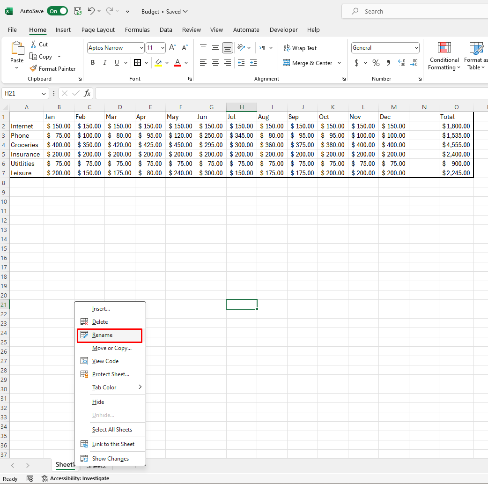 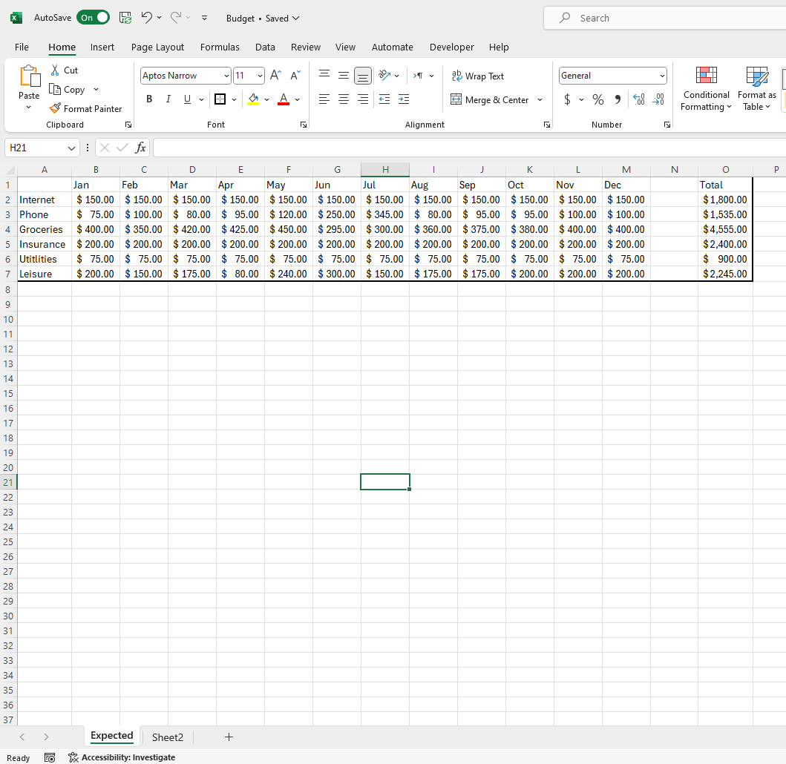
- "Expected" label means in this context that from what we have created in the previous sheet from Creating a budget the numbers in it are the amounts that we anticipate spending on the expenses.
-
Right click on the “Sheet2” that is on the left of the bottom bar and click “Rename” and rename it to “Actual”: 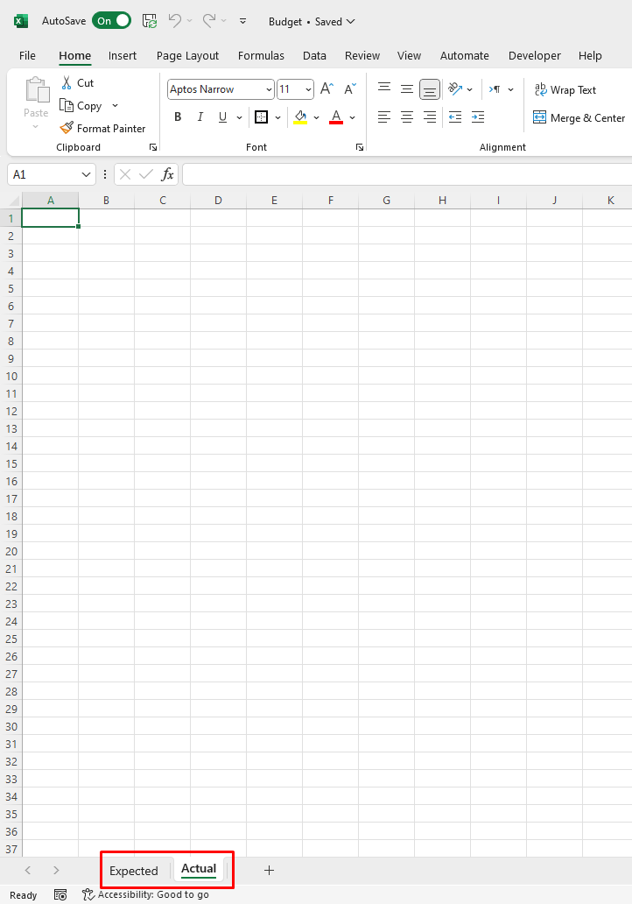
- We will label our new worksheet as "Actual". This means the actual amount that you have spent on the set expense(s) from previous worksheet. This will relate the two worksheets.
Transferring Table
Since the separate sheets indicate that they share the same table in terms of labels, we will transfer the table from "Expected" sheet to the current worksheet:
-
Click and drag over the months labels of the table made from Creating a budget, then copy and paste it to row 1 starting at column B on "Actual" sheet:
- We want to leave space at column A for expense labels that we will copy and paste to the current worksheet.
-
Click and drag over the expense labels of table made from Creating a budget, then copy and paste it to row 2 under column A on "Actual" sheet: 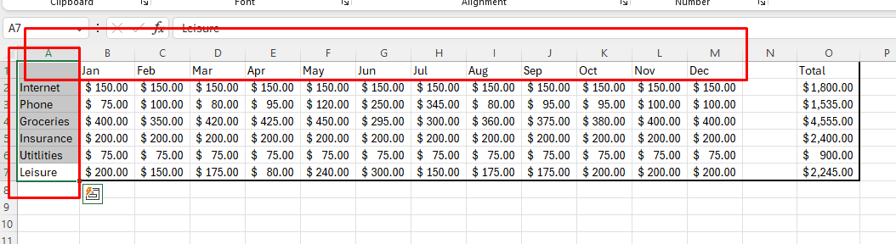

-
We want to leave space at row 1, which will produce identical table minus the number inputs.
Warning
You are only supposed to copy the labels, not the numbers, as we need to fill in the cells with new data. Since we have to avoid copying the numbers, we have to go back and forth copying and pasting the labels to the "Actual" worksheet.
Filling the table
-
Fill the Table of the “Actual” Sheet under their respective labels: 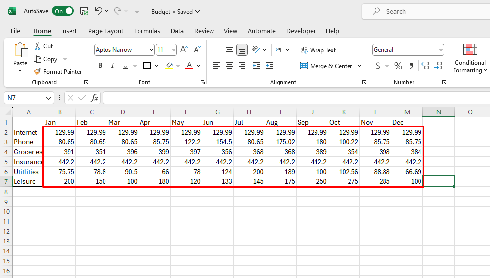
- This represents the actual cost of the items that you previously budgeted from.
-
Format the Data for the desired currency, as previously explained in Creating a budget: 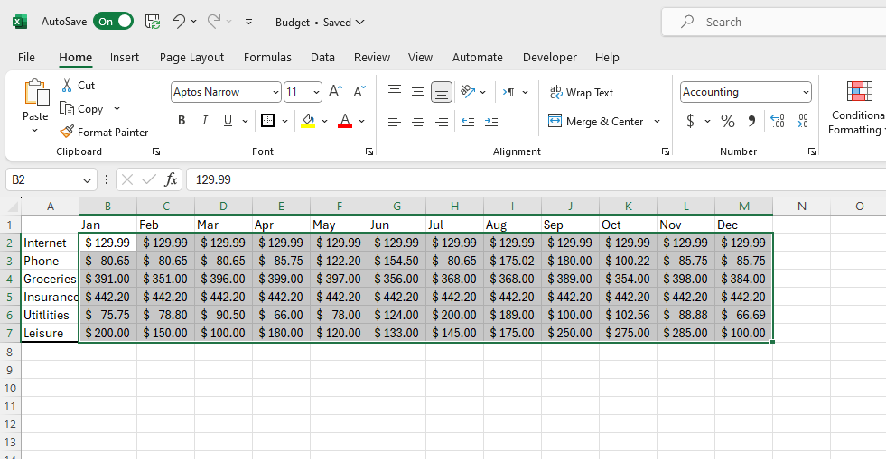
Creating a Chart
-
Click and drag the Mouse Over the Complete Table: 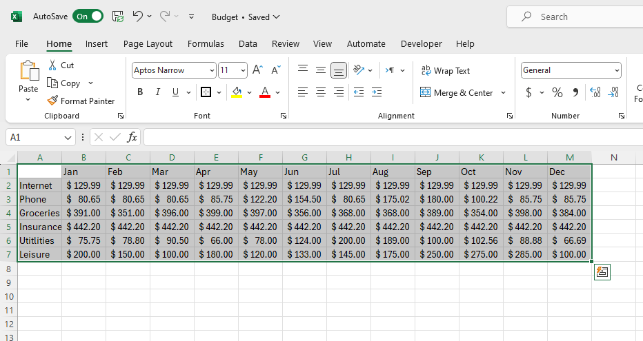
-
Click on the “Insert” Tab in the navigation Bar On the Top of the program: 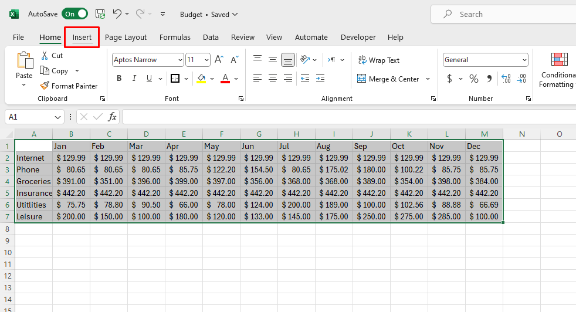 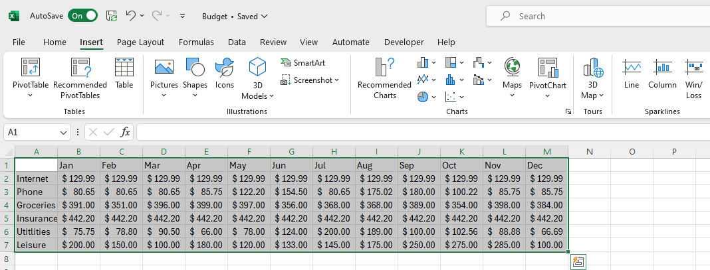
-
Click over The picture of “Line Chart” and choose The first Option Under “2-D Line”: 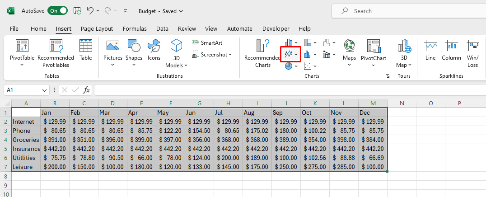 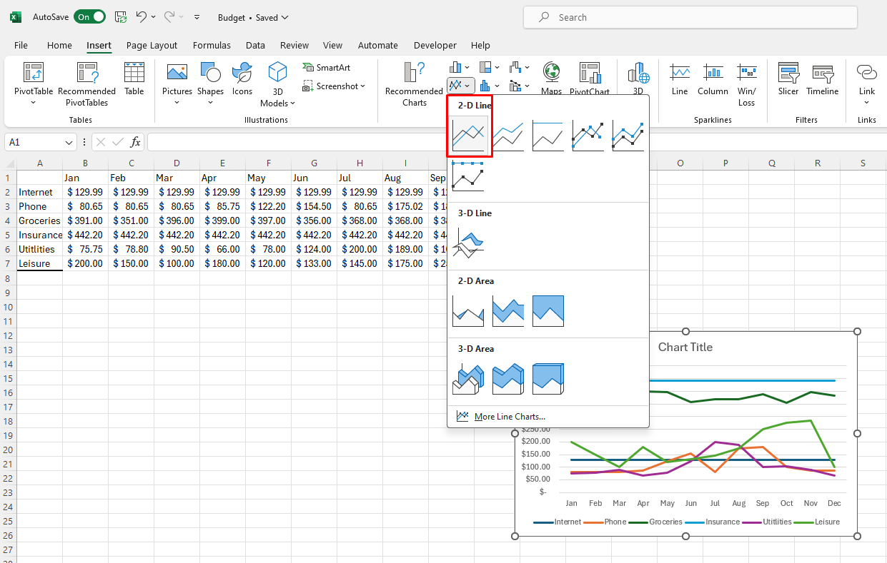
-
Rename The Chart “Chart Title” to “Actual Expenses” by double clicking on the title: 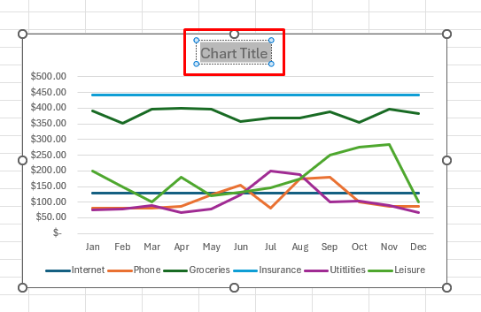 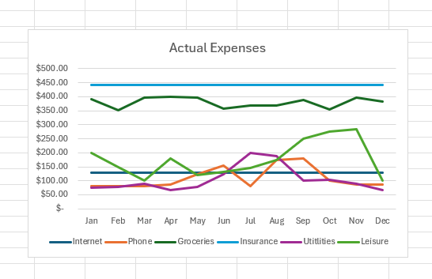
- We will name it to "Actual Expenses" in the context of the current worksheet we are working on.
-
Press Ctrl + S and Save the File
Conclusion
In this tutorial, we have accomplished:
 How to create a chart in Excel. This is a useful tool to visualize data and make it easier to understand.
How to create a chart in Excel. This is a useful tool to visualize data and make it easier to understand.
We have also learned how to work with multiple worksheets in Excel, which can help organize data and make it easier to manage large projects.
On the next tutorial, we will learn how to create: